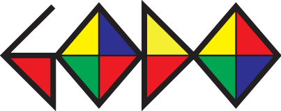

강남고도미술학원어떤 화면으로 볼까요?
헤더 종류와 화면 구성을 선택해 V1·V2·V3·V4·V5·V6·V7·V8·V9·V10·V11·V12·V13·V14·V15·V16 영상을 비교하세요.
각 화면 안에서 키보드 ← / → 또는 모바일 좌우 스와이프로 V1 ↔ V2 ↔ V3 ↔ V4 ↔ V5 ↔ V6 ↔ V7 ↔ V8 ↔ V9 ↔ V10 ↔ V11 ↔ V12 ↔ V13 ↔ V14 ↔ V15 ↔ V16을 비교할 수 있습니다.
수정 스토리보드 보기V15 · S03–S05 손 수정 이미지
영상만 보기V16 페이드인 4K 영상부터 재생 · 화면 안에서 V1·V2·V3·V4·V5·V6·V7·V8·V9·V10·V11·V12·V13·V14·V15·V16 비교
V16 · 페이드인 + 작품 전체가 보이는 모바일 엔딩
4K · 12.46초 · 무음 · 검정에서 얼굴이 서서히 나타납니다. 새 모바일 세로 영상은 엔딩에 작품 전체를 보여주며 천천히 확대됩니다. PC와 이전 영상도 유지했습니다. 새 편집본과 이전 영상 비교 →
하단선 없는 투명 헤더
검정 하단선과 헤더 배경 그라데이션을 제거했습니다. 영상이 화면 전체를 채웁니다.

하단선 없는 투명 헤더 · 문구 정중앙
헤더를 포함한 전체 화면의 정중앙에 히어로 문구를 배치했습니다. PC와 모바일에 동일하게 적용됩니다.

CTA 테두리 빛 · 강조 시안 5가지
빛의 굵기·밝기·잔광을 강화한 다섯 가지 테두리 효과입니다. 모두 하단선 없는 투명 헤더 · 영상 전체 어둡게 기준이며, 첫 장면에서 한 번 실행됩니다. 다시 보려면 새로고침하세요.
CTA 시선 유도 시안 · 5가지
하단선 없는 투명 헤더 · 영상 전체 어둡게 기준입니다. 시안을 열면 첫 장면에 맞춰 효과가 한 번 재생됩니다. 다시 보려면 페이지를 새로고침하세요.
흰색 헤더
흰색 헤더는 영상과 분리하고, 그 아래 남은 화면을 히어로 영상으로 채웠습니다.
선택한 화면 구성은 유지되고 영상만 바뀝니다.